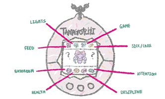
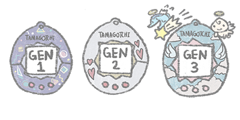

Caring for Your Tamagotchi: A Beginner's Guide to the Rereleased Classic Models
BACKSTORY OF THE TAMAGOTCHI WORLD
According to the Tamagotchi Wiki, Tamagotchi are a group of aliens from the distant Tamagotchi Planet, located far away from Earth. Their peaceful world was disrupted when a character named Oyajitchi made the planet drunk by giving it sake. As a result, the planet became uninhabitable, forcing the Tamagotchi to leave their home and travel in UFOs, hoping to find a new place to stay while their home recovered (Tamagotchi Wiki, n.d.).
One evening, Professor Banzo, a scientist, was feeling down by the Sumida River after a personal loss. Out of nowhere, a UFO crashed into him, sending him into the water. He took the damaged UFO back to his lab, where he and his assistant Mikachu helped the Tamagotchi inside. To help them adapt to Earth, Banzo created the "Tamagotchi House," an egg-shaped device with a simple screen and controls that allowed people to take care of the aliens (Tamagotchi Wiki, n.d.).
Mikachu started painting the devices in colorful designs and brought them to school, where they quickly caught the attention of her classmates. As more Tamagotchi species were discovered, Banzo sent the devices to research labs across Japan, and they eventually made their way to different parts of the world (Tamagotchi Wiki, n.d.).
The full story can be found in official books like Tamagotchi Research Report: Tamagotchi Book and Tamagotchi Honto no Hanashi. The American edition, Tamagotchi: The Official Care Guide and Record Book, mentions the Tamagotchi's arrival on Earth but leaves out the part about their planet becoming drunk, simply stating that the aliens came to learn about life on Earth (Tamagotchi Wiki, n.d.).
BASIC CARE GUIDE FOR RERELEASE GEN 1 TAMAGOTCHI (USA VERSION)
Caring for your Tamagotchi is both simple and enjoyable! Based on the guidance in the official manual (TamaTalk, n.d.) and Thaao’s Tamas guide (Thaao, n.d.), follow these steps to make sure your Tamagotchi stays healthy and happy as it evolves into its adult form. Keep in mind that every action you take will affect its growth and development!
- Remove the Insulation Sheet: Pull the paper tab from the side of your Tamagotchi to "wake it up" after it has been dormant.
- Reset: If needed, press the reset button on the back with a small object, like a pen, to make sure everything is set up properly.
- Set the Time: Press the middle button (B) to bring up the clock. Use the left button (A) to adjust the hours, and the middle button (B) to set the minutes. Press the right button (C) to confirm the time and set AM or PM.
- Once your Tamagotchi is set up, it will hatch in about 5 minutes. A blinking egg will show on the screen, and when it hatches, your Tamagotchi will beep to get your attention!
- Check the Health Meter: To check how healthy, happy, or hungry your Tamagotchi is, press the A button until the health meter icon appears. Then, press the B button to see its status.
- Happy & Hungry Hearts: Your Tamagotchi’s happiness and hunger are shown by hearts. Each one has 4 hearts for both categories, which you can fill by feeding and playing with your Tamagotchi.
- Feeding: Press the A button to bring up food options (meal or snack). Press B to choose what to give your Tamagotchi.
- Play: Press A to choose a game (a left/right guessing game), and press B to start. Playing with your Tamagotchi increases its happiness.
- Why Discipline Matters: A disciplined Tamagotchi is happier and more likely to grow into a well-behaved adult. You can increase the discipline meter by scolding your Tamagotchi for bad behavior, like beeping without reason or refusing to eat when hungry.
- When to Discipline: Discipline is needed when your Tamagotchi beeps for no reason or doesn’t respond to feeding and playing. Press the A button to bring up the discipline menu and press B to scold.
- Bathroom Time: Just like real pets, your Tamagotchi needs to be cleaned after using the bathroom. If you see droppings on the screen, press the A button until a duck icon appears. Press B to clean it up.
- Health: Keeping your Tamagotchi clean is important for its health. If your Tamagotchi gets sick (indicated by a skull icon), give it medicine from the medicine icon in the menu.
- Light: Tamagotchis need to sleep at night. Turn off the light by pressing A until the light bulb icon appears, and press B to turn it off. The light will automatically turn on when your Tamagotchi wakes up.
- Sleep: Your Tamagotchi will automatically fall asleep at night. If disturbed, it may get upset or unhappy.
- Using the Timer: To check the current time, press the B button when no other icons are highlighted. You can also reset the timer if needed to fix time issues.
- Pause Function: If you need to take a break, press both the A and C buttons at the same time to pause your Tamagotchi's life cycle. Reset the timer to resume.
- As you care for your Tamagotchi, it will go through different growth stages. How well you feed, play, and discipline it will affect its growth, and it will eventually evolve into an adult form.
- Sound: If you want peace and quiet, press A and C together to turn off the sound. Press them again to turn it back on.
- Battery: If the screen starts to fade, it’s time to replace the battery. Open the back, remove the old one, and replace it with a new CR2032 battery.
- If you want to start over with a new Tamagotchi, press the reset button on the back. A new egg will appear in about 5 minutes, and you can begin the process again with a new version of your Tamagotchi.
TAMAGOTCHI GEN 1 CHARACTERS (USA RERELEASE)
The following list features the original Generation 1 Tamagotchi characters from the USA re-release, detailing their stages of evolution, care needs, and unique characteristics. The information is sourced from the official Tamagotchi website and the Tamagotchi Wiki (Tamagotchi Official, n.d.; Tamagotchi Wiki, n.d.).
- Babytchi
-
- Stage: Baby
- Time to Hatch: 5 minutes after the egg appears
- Description: A lovable and needy little Tamagotchi. It has a big appetite, frequently makes messes, and needs lots of care, especially when it comes to its health.
- Care Tips: Make sure to feed it regularly, clean up after it, and monitor its health closely to avoid illness.
- Marutchi
-
- Stage: Child
- Time to Evolve: 65 minutes after hatching
- Description: Slightly more independent than Babytchi, Marutchi has a bit of a spoiled attitude and loves getting attention.
- Care Tips: While still needing care, you can start to teach it discipline as it begins to show more demanding behaviors.
- Tamatchi
-
- Stage: Teen
- Time to Evolve: Approximately 24 hours after hatching or evolving from Marutchi
- Description: Energetic and full of curiosity, Tamatchi loves to explore and chat. It’s always moving and often getting into mischief, showing off its clever side.
- Care Tips: Balancing affection with discipline is key. It will need some guidance to avoid trouble.
- Kuchitamatchi
-
- Stage: Teen
- Time to Evolve: About 24 hours after hatching or evolving from Marutchi
- Description: A little spoiled and laid-back, Kuchitamatchi enjoys eating and taking it easy, but can still be a handful at times.
- Care Tips: Needs extra attention in the discipline department to curb its more selfish tendencies.
- Mametchi
-
- Stage: Adult
- Time to Evolve: 24 hours after evolving from Tamatchi
- Description: Mametchi is a driven character who thrives on learning and trying new things. While his inventions don’t always go as planned, his hard work is commendable.
- Care Tips: Show consistent care to unlock this industrious character, as it’s the result of attentive and reliable care.
- Ginjirotchi
-
- Stage: Adult
- Time to Evolve: 24 hours after evolving from Tamatchi
- Description: Hardworking like Mametchi, but a little more easygoing, Ginjirotchi balances diligence with relaxation.
- Care Tips: Achieved with a balanced approach—don’t be too strict or too lenient. It rewards a mix of care mistakes and small discipline corrections.
- Maskutchi
-
- Stage: Adult
- Time to Evolve: 24 hours after evolving from Tamatchi
- Description: Known for being serious and self-critical, Maskutchi can be a tough character but will show its caring side once disciplined properly.
- Care Tips: A mix of care mistakes and discipline mistakes will lead to Maskutchi’s evolution.
- Kuchipatchi
-
- Stage: Adult
- Time to Evolve: 24 hours after evolving from Tamatchi
- Description: Sweet and laid-back, Kuchipatchi enjoys good food and peaceful moments with family, making it one of the friendlier characters.
- Care Tips: While it’s fairly easygoing, Kuchipatchi requires a bit more attention to care mistakes, but it’s forgiving when treated with care.
- Nyorotchi
-
- Stage: Adult
- Time to Evolve: 24 hours after evolving from Tamatchi
- Description: A bit of a perfectionist, Nyorotchi enjoys taking it slow and managing stress in its own way.
- Care Tips: Requires patience and careful management of care mistakes and discipline. It’s a more complicated character to raise.
- Tarakotchi
-
- Stage: Adult
- Time to Evolve: 24 hours after evolving from Tamatchi
- Description: Tough on itself and others, Tarakotchi is a strict character with high standards and discipline.
- Care Tips: Requires a considerable number of care and discipline mistakes to evolve, making it a challenge for those who want to take the tougher route.
- Bill (Special)
-
- Stage: Special
- Time to Evolve: 24 hours after evolving from Maskutchi
- Description: A rare and special character only available in international versions. Bill evolves from Maskutchi under very specific care conditions.
- Care Tips: To unlock Bill, you must meet very specific conditions, requiring precise care and discipline mistakes.
GEN 1, GEN 2, GEN 3: KEY DIFFERENCES IN TAMAGOTCHI RERELEASES
The original Tamagotchi series has evolved through several rereleases, each introducing unique features while retaining the classic nurturing gameplay. Here's an overview of the key differences between the first three generations of Tamagotchi rereleases:
- Gen 1: The first-generation rerelease introduced players to the original Tamagotchi experience. You start with an egg, which hatches into one of several basic characters. The gameplay revolves around feeding, cleaning up after your pet, and playing mini-games. The goal is to raise your Tamagotchi to adulthood, with different outcomes based on how you interact with it (Tamagotchi, n.d., What is Original Tamagotchi?).
- Gen 2: This rerelease introduced a new set of characters, known as the "New Species Discovered!! Tamagotchi." While the core gameplay remained the same, Gen 2 brought new food options, different mini-games, and unique interactions. The evolution of your Tamagotchi depended on different care patterns, offering a fresh experience for players who had already enjoyed Gen 1. It also allowed players to unlock new characters as their Tamagotchi grew (Tamagotchi, n.d., What is Original Tamagotchi?).
- Gen 3: Known for the Tamagotchi Angel series, this rerelease brought angelic-themed characters. New features included a "tapping" mechanic to ward off a bat called BATTCHI and expanded mini-games, such as the Shooting Star game. The care process still included feeding, cleaning, and healing your Tamagotchi, but new interactions, like offering praise when your pet prayed, added depth to the experience. Gen 3 also introduced a fashionable design, allowing players to carry the device as an accessory (Tamagotchi, n.d., Tamagotchi Angel returns with a new look!).